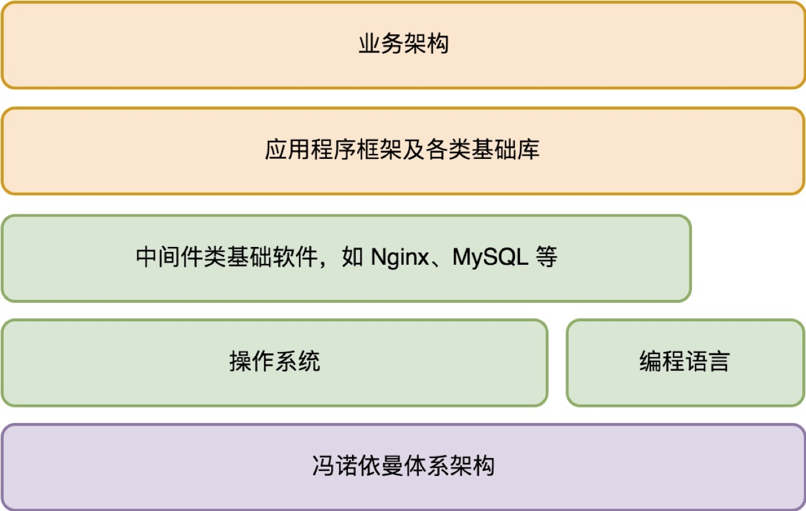
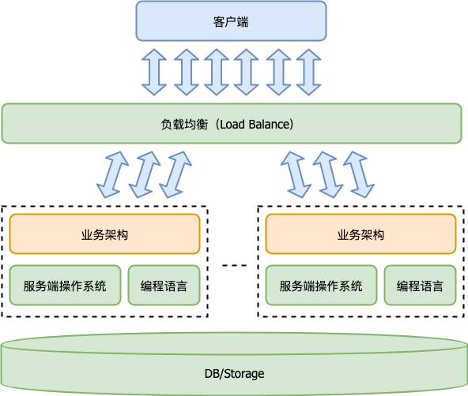

- 00 开篇词 怎样成长为优秀的软件架构师？.md
- 01 架构设计的宏观视角.md
- 02 大厦基石：无生有，有生万物.md
- 03 汇编：编程语言的诞生.md
- 04 编程语言的进化.md
- 05 思考题解读：如何实现可自我迭代的计算机？.md
- 06 操作系统进场.md
- 07 软件运行机制及内存管理.md
- 08 操作系统内核与编程接口.md
- 09 外存管理与文件系统.md
- 10 输入和输出设备：交互的演进.md
- 11 多任务：进程、线程与协程.md
- 12 进程内协同：同步、互斥与通讯.md
- 13 进程间的同步互斥、资源共享与通讯.md
- 14 IP 网络：连接世界的桥梁.md
- 15 可编程的互联网世界.md
- 16 安全管理：数字世界的守护.md
- 17 架构：需求分析 (上).md
- 18 架构：需求分析 (下) · 实战案例.md
- 19 基础平台篇：回顾与总结.md
- 20 桌面开发的宏观视角.md
- 21 图形界面程序的框架.md
- 22 桌面程序的架构建议.md
- 23 Web开发：浏览器、小程序与PWA.md
- 24 跨平台与 Web 开发的建议.md
- 25 桌面开发的未来.md
- 26 实战（一）：怎么设计一个“画图”程序？.md
- 27 实战（二）：怎么设计一个“画图”程序？.md
- 28 实战（三）：怎么设计一个“画图”程序？.md
- 29 实战（四）：怎么设计一个“画图”程序？.md
- 30 实战（五）：怎么设计一个“画图”程序？.md
- 31 辅助界面元素的架构设计.md
- 32 架构：系统的概要设计.md
- 33 桌面开发篇：回顾与总结.md
- 34 服务端开发的宏观视角.md
- 35 流量调度与负载均衡.md
- 36 业务状态与存储中间件.md
- 37 键值存储与数据库.md
- 38 文件系统与对象存储.md
- 39 存储与缓存.md
- 40 服务端的业务架构建议.md
- 41 实战（一）：“画图”程序后端实战.md
- 42 实战（二）：“画图”程序后端实战.md
- 43 实战（三）：“画图”程序后端实战.md
- 44 实战（四）：“画图”程序后端实战.md
- 45 架构：怎么做详细设计？.md
- 46 服务端开发篇：回顾与总结.md
- 47 服务治理的宏观视角.md
- 48 事务与工程：什么是工程师思维？.md
- 49 发布、升级与版本管理.md
- 50 日志、监控与报警.md
- 51 故障域与故障预案.md
- 52 故障排查与根因分析.md
- 53 过载保护与容量规划.md
- 54 业务的可支持性与持续运营.md
- 55 云计算、容器革命与服务端的未来.md
- 56 服务治理篇：回顾与总结.md
- 57 心性：架构师的修炼之道.md
- 58 如何判断架构设计的优劣？.md
- 59 少谈点框架，多谈点业务.md
- 60 架构分解：边界，不断重新审视边界.md
- 61 全局性功能的架构设计.md
- 62 重新认识开闭原则 (OCP).md
- 63 接口设计的准则.md
- 64 不断完善的架构范式.md
- 65 架构范式：文本处理.md
- 66 架构老化与重构.md
- 67 架构思维篇：回顾与总结.md
- 68 软件工程的宏观视角.md
- 69 团队的共识管理.md
- 70 怎么写设计文档？.md
- 71 如何阅读别人的代码？.md
- 72 发布单元与版本管理.md
- 73 软件质量管理：单元测试、持续构建与发布.md
- 74 开源、云服务与外包管理.md
- 75 软件版本迭代的规划.md
- 76 软件工程的未来.md
- 77 软件工程篇：回顾与总结.md
- 加餐 如何做HTTP服务的测试？.md
- 加餐 实战：“画图程序” 的整体架构.md
- 加餐 怎么保障发布的效率与质量？.md
- 热点观察 我看Facebook发币（上）：区块链、比特币与Libra币.md
- 热点观察 我看Facebook发币（下）：深入浅出理解 Libra 币.md
- 用户故事 站在更高的视角看架构.md
- 答疑解惑 想当架构师，我需要成为“全才”吗？.md
- 结束语 放下技术人的身段，用极限思维提升架构能力.md
- 课外阅读 从《孙子兵法》看底层的自然法则.md
34 服务端开发的宏观视角
你好，我是七牛云许式伟。
今天开始，我们进入第三章，谈谈服务端开发。
服务端的发展史
服务端开发这个分工，出现的历史极短。短得让人难以想象。
1946 年，第一台电子计算机问世。1954 年，第一门高级语言 Fortran 发布。整个信息科技发展到今天，大约也就 60~70 年的历史。
1974 年，Internet 诞生。1989 年，万维网（WWW）诞生，但刚开始只限于政府和学术研究用途，1993 年才开始进入民用市场。
从这个角度来说，服务端开发这个分工，从互联网诞生算起也就 40 多年的历史。真正活跃的时段，其实只有 20 多年。
但其发展速度是非常惊人的。我们简单罗列下这些年来的标志性事件。
- 1971 年，电子邮件诞生。
- 1974 年，Internet 诞生。
- 1974 年，第一个数据库系统 IBM System R 诞生。SQL 语言诞生。
- 1989 年，万维网（WWW）诞生。
- 1993 年，世界上第一个 Web 服务器 NCSA HTTPd 诞生，它也是大名鼎鼎的 Apache 开源 Web 服务器的前身。
- 1998 年，Akamai 诞生，提供内容分发网络（CDN）服务。这应该算全球第一个企业云服务，虽然当时还没有云计算这样的概念。
- 2006 年，Amazon 发布弹性计算云（Elastic Compute Cloud），简称 EC2。这被看作云计算诞生的标志性事件。
- 2007 年，Amazon 发布简单存储服务（Simple Storage Service），简称 S3。这是全球第一个对象存储服务。
- 2008 年，Google 发布 GAE（Google App Engine）。
- 2009 年，Go 语言诞生。Derek Collison 曾预言 Go 语言将制霸云计算领域。
- 2011 年，七牛云诞生，发布了 “对象存储+CDN+多媒体处理” 融合的 PaaS 型云存储，为企业提供一站式的图片、音视频等多媒体内容的托管服务。
- 2013 年，Docker 诞生。
- 2013 年，CoreOS 诞生。这是第一个专门面向服务端的操作系统。
- 2014 年，Kubernetes 诞生。当前被认为是数据中心操作系统（DCOS）的事实标准。
通过回顾服务端的发展历史，我们可以发现，它和桌面开发技术迭代的背后驱动力是完全不同的。
桌面开发技术的迭代，是交互的迭代，是人机交互的革命。而服务端开发技术的迭代，虽然一开始沿用了桌面操作系统的整套体系框架，但它正逐步和桌面操作系统分道而行，转向数据中心操作系统（DCOS）之路。
服务端程序的需求
这些演进趋势的根源是什么？
其一是规模。
桌面程序是为单个用户服务的，所以它关注点是用户交互体验的不断升级。
服务端程序是被所有用户所共享，为所有用户服务的。一台物理的机器资源总归是有限的，能够服务的用户数必然存在上限，所以一个服务端程序在用户规模到达一定程度后，需要分布式化，跑在多台机器上以服务用户。
其二是连续服务时长。
桌面程序是为单个用户服务的，用户在单个桌面程序的连续使用时长通常不会太长。
但是服务端程序不同，它通常都是 7x24 小时不间断服务的。当用户规模达到一定基数后，每一秒都会有用户在使用它，不存在关闭程序这样的概念。
其三是质量要求。
每个桌面程序的实例都是为单个用户服务的，有一亿的用户就有一亿个桌面程序的实例。
但是服务端程序不同，不可能有一亿个用户就跑一亿个，每个用户单独用一个，而是很多用户共享使用一个程序实例。
这意味着两者对程序运行崩溃的容忍度不同。
一个桌面程序实例运行崩溃，它只影响一个用户。
但一个服务端程序实例崩溃，可能影响几十万甚至几百万的用户。
这是不可接受的。
一个服务端程序的实例可以崩溃，但是它的工作必须立刻转交给其他的实例重新做，否则损失太大了。
所以服务端程序必须能够实现用户的自动转移。一个实例崩溃了，或者因为需要功能升级而重启了，它正在服务的用户需要转给其他实例来服务。
所以，服务端程序必须是多实例的。单个程序实例的临时不可用状态，要做到用户无感知。
从用户视角看，服务端程序 7x24 小时持续服务，任何时刻都不应该崩溃。就如同水电煤一样。
服务端开发的体系架构
在 “[01 | 架构设计的宏观视角]” 这一讲中，我们将一个服务端程序完整的体系架构归纳如下：

这个架构体系，是为了方便你和桌面开发的体系架构建立自然的对应关系而画的。
它当然是对的，但它只是从服务端程序的单个实例看的，不是服务端程序体系架构的全部。
在 “[15 | 可编程的互联网世界]” 这一讲中，我们把 TCP/IP 层比作网络的操作系统，一个网络程序的体系架构如下：

一个服务端程序当然也是一个网络程序，它符合网络程序的体系架构。
但它也不是服务端程序体系架构的全部。
从宏观视角看，一个服务端程序应该首先是一个多实例的分布式程序。其宏观体系架构示意如下：

相比桌面程序而言，服务端程序依赖的基础软件不只是操作系统和编程语言，还多了两类：
- 负载均衡（Load Balance）；
- 数据库或其他形式的存储（DB/Storage）。
为什么会需要负载均衡（Load Balance）？为什么会需要数据库或其他形式的存储？你可以留言探讨一下。我们在接下来的几讲将聊聊负载均衡和存储。
结语
今天我们从服务端的发展历程、服务端开发的需求谈起，以此方便你理解服务端开发的生态会怎么演化，技术迭代会走向何方。
我们这里探讨的需求和具体业务无关，它属于服务端本身的领域特征。就像桌面的领域特征是强交互，以事件为输入，GDI 为输出一样，服务端的领域特征是大规模的用户请求，以及 24 小时不间断的服务。
这些领域特征直接导致了服务端开发的体系架构和桌面必然是如此的不同。
如果你对今天的内容有什么思考与解读，欢迎给我留言，我们一起讨论。下一讲我们将聊聊负载均衡（Load Balance）。
如果你觉得有所收获，也欢迎把文章分享给你的朋友。感谢你的收听，我们下期再见。
© 2019 - 2023 Liangliang Lee. Powered by gin and hexo-theme-book.